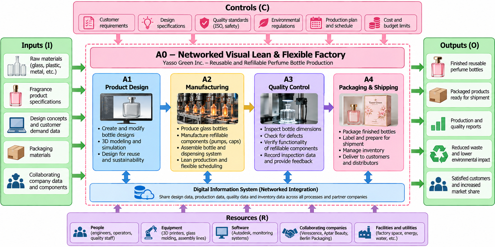
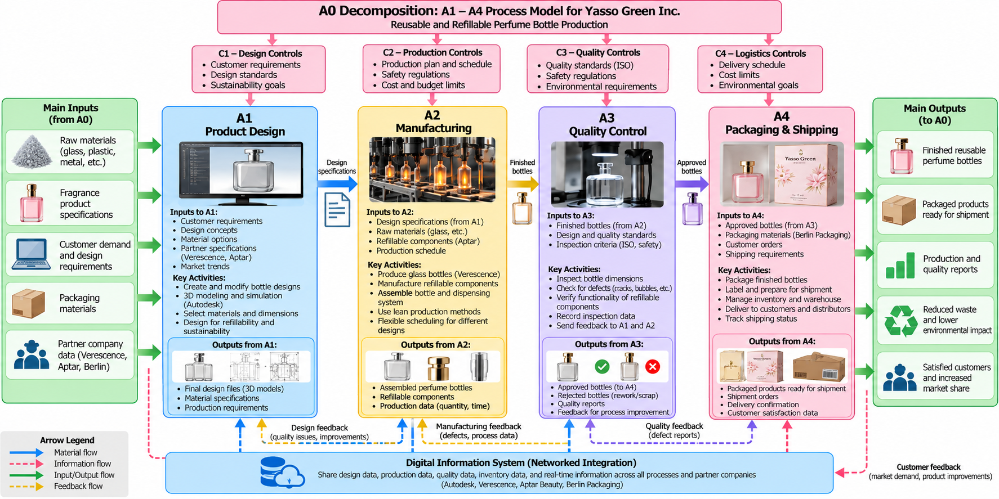
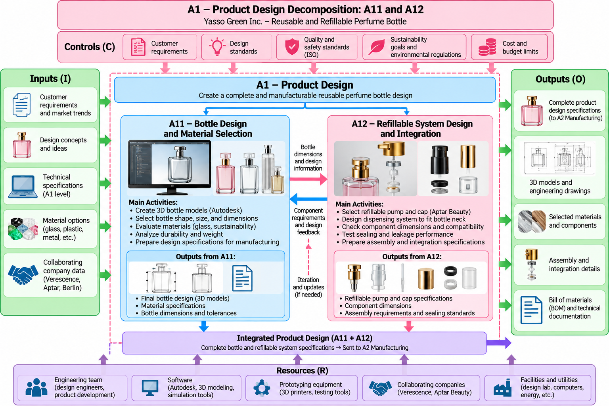
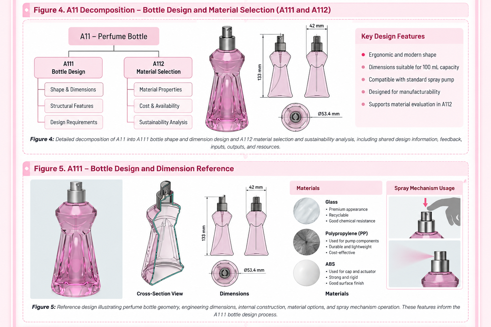

Assignment 3
My Object-Oriented Process Model
Developing a Networked Visual Lean & Flexible Factory
Yasso Green Inc.
Yasmeen Mohamed · IE 203 Computer Graphics · Fall 2026 · Professor Ranky
One-Page Description of the A0 Process
A0 – Developing a Networked Visual Lean & Flexible Factory
My company, Yasso Green Inc., is planning to develop a networked, visual, lean, and flexible factory that produces reusable and refillable perfume bottles. Our main goal is to manufacture high-quality perfume bottles while reducing waste, saving materials, improving production efficiency, and protecting the environment.
To achieve this goal, our factory will use an object-oriented process model. This means we will divide the entire manufacturing system into smaller processes, called objects. Each object will have a specific function, inputs, outputs, controls, and resources. All these processes will be connected through a digital network so that information can move easily between departments and collaborating companies.
Our manufacturing system will include four main processes:
A1 – Product Design: Creating reusable perfume bottle designs using digital design software.
A2 – Manufacturing: Producing glass bottles and refillable dispensing components.
A3 – Quality Control: Inspecting bottles to make sure they meet safety and quality standards.
A4 – Packaging and Shipping: Packaging finished bottles and delivering them to customers.
Yasso Green Inc. will also plan to work with several collaborating companies. Autodesk will support our digital design process, Verescence will support glass bottle manufacturing, Aptar Beauty will provide refillable pumps and dispensing technology, and Berlin Packaging will support packaging and distribution. These companies will share product specifications and production information through a connected digital system.
Our factory will follow lean manufacturing principles to reduce unnecessary materials, production delays, and defects. For example, if a bottle fails a quality inspection, the system will record the problem and send feedback to the manufacturing process. This will help the factory identify problems and improve production.
We will also use a simple production efficiency calculation:
Defect Rate (%) = (Number of Defective Bottles ÷ Total Bottles Produced) × 100
For example, if the factory produces 1,000 bottles and 25 are defective:
Defect Rate = (25 ÷ 1,000) × 100 = 2.5%
This information will help our company measure quality and identify opportunities for improvement.
Our factory will also be flexible, meaning we can change bottle designs, sizes, or production quantities based on customer demand without redesigning the entire production system.
Overall, our A0 process model will show how product design, manufacturing, quality control, packaging, and collaborating companies work together as one connected system. By using digital technology, lean manufacturing, and reusable packaging, Yasso Green Inc. aims to create an efficient and sustainable perfume bottle factory.
Figure 1. A0 – Networked Visual Lean & Flexible Factory

Figure 1: Overall factory process model showing inputs, controls, resources, outputs, and processes A1–A4.
Overall factory model showing inputs, controls, resources, outputs, and connected processes A1–A4.
A0 – Overall Factory Process Explanation
The A0 diagram shows how Yasso Green Inc. plans to operate its networked visual lean and flexible factory for reusable perfume bottles. The system connects four main processes: product design (A1), manufacturing (A2), quality control (A3), and packaging and shipping (A4). Each process receives inputs, follows quality and production controls, and uses resources such as employees, machines, software, and collaborating companies. All four processes share information through a digital network to reduce waste, improve communication, and make production more efficient.
Detailed Factory Process Model (A1–A4)
A1 – Product Design
The product design process focuses on creating reusable and refillable perfume bottles using Autodesk digital design software. Engineers will develop 3D models to determine the bottle's shape, size, materials, and refillable features. The design information will be shared with Verescence and Aptar Beauty to help plan glass bottle manufacturing and dispensing components. This digital connection will help reduce design mistakes and improve communication before production begins.
A2 – Manufacturing
The manufacturing process focuses on producing glass perfume bottles and assembling refillable components. Verescence will be a proposed manufacturing partner for glass bottles, while Aptar Beauty will support the dispensing and refillable systems. The factory will use production schedules and digital information from A1 to organize manufacturing and reduce unnecessary waste. Production data will be shared with the quality control process to help identify and correct manufacturing problems.
A3 – Quality Control
The quality control process checks whether finished perfume bottles meet the company's design and quality requirements. Employees will inspect bottle dimensions, glass defects, and the functionality of refillable pumps. Inspection results will be recorded in a digital system and shared with the manufacturing and design departments. This feedback will help the factory reduce defects, improve product quality, and prevent repeated production problems.
A4 – Packaging and Shipping
The packaging and shipping process prepares approved perfume bottles for delivery to customers. Berlin Packaging will be a proposed partner supporting packaging materials and distribution planning. The factory will use digital inventory information to track finished products and organize shipments. This connected process will help reduce packaging waste, avoid shipping mistakes, and improve delivery efficiency.
Integration of the Four Processes
All four processes will be connected through a shared digital information system. Product design information will move from A1 to A2, manufacturing results will move to A3, and approved products will move to A4. Quality feedback will also return to earlier processes when improvements are needed. This integration will help Yasso Green Inc. operate as a networked, visual, lean, and flexible factory.
Figure 2. A0 Decomposition – A1–A4 Process Model

Figure 2: Detailed factory process model showing product design (A1), manufacturing (A2), quality control (A3), and packaging and shipping (A4), including inputs, outputs, controls, and digital information flow.
Detailed information and material flows among product design, manufacturing, quality control, and packaging.
Lower-Level Process Model – A11 and A12
Figure 3. A1 Decomposition – Product Design (A11 and A12)

Figure 3: Product design decomposition showing bottle design and material selection (A11), refillable system design and integration (A12), their shared information, and the integrated product design sent to manufacturing.
Bottle design and refillable system design, including design feedback and component integration.
A11 – Perfume Bottle Design and Material Selection
The A11 process focuses on designing the shape, size, and materials of reusable perfume bottles. Engineers will use Autodesk software to create 3D models and compare different design options. The design team will consider glass thickness, bottle weight, durability, and environmental impact when selecting materials. The final design specifications will be shared digitally with Verescence and Aptar Beauty to support manufacturing and component compatibility.
A12 – Refillable System Design and Integration
The A12 process focuses on designing the refillable pump, cap, and dispensing system for the perfume bottle. Engineers will use technical specifications from Aptar Beauty to select components that fit the bottle's neck and allow customers to refill it. The design team will check component dimensions, assembly requirements, and sealing performance before approving the design. Information from A11 and A12 will be combined into one complete product design and sent to A2 Manufacturing.
Integration Between A11 and A12
A11 and A12 work together to develop a complete reusable perfume bottle design. A11 provides bottle dimensions and material specifications, while A12 uses this information to design a compatible refillable dispensing system. If the pump does not fit the bottle correctly, A12 will send feedback to A11 so engineers can modify the design. This digital communication will help reduce manufacturing errors, save materials, and improve product quality.
Detailed Process Model – A111 and A112
Figure 4. A11 Decomposition – Bottle Design and Material Selection (A111 and A112)

Figure 4: Engineering design showing A111 bottle shape and dimension design, A112 material selection and sustainability analysis, bottle geometry, dimensions, materials, and spray mechanism.
Detailed bottle dimensions, material evaluation, shared specifications, and design feedback.
A111 – Bottle Shape and Dimension Design
The A111 process focuses on creating the shape and dimensions of the reusable perfume bottle. Engineers will use Autodesk software to develop a 3D model showing the bottle's height, width, neck opening, and glass thickness. The design will consider customer requirements, appearance, and compatibility with refillable components. The final dimensions and 3D drawings will be shared with A112 for material evaluation and A12 for refillable pump integration.
A112 – Material Selection and Sustainability Analysis
The A112 process focuses on selecting suitable materials for the reusable perfume bottle. Engineers will compare glass materials based on durability, weight, cost, recyclability, and manufacturing requirements. The company will work with Verescence as a proposed manufacturing partner to evaluate whether the selected materials are suitable for production. The results will be shared with A111 so the bottle design can be adjusted if the material does not meet the requirements.
Engineering Analysis
To evaluate the bottle design, Yasso Green Inc. will estimate the amount of material required for production.
Material Utilization (%) = (Material Used in Finished Products ÷ Total Material Input) × 100
For example, if 100 kg of glass enters production and 92 kg becomes finished bottles:
Material Utilization = (92 ÷ 100) × 100 = 92%
The remaining 8% represents material not incorporated into finished bottles. This calculation will help the company measure material efficiency and identify opportunities to reduce waste.
Integration Between A111 and A112
A111 and A112 will exchange information through the company's digital design system. A111 will provide bottle dimensions and 3D models, while A112 will provide material specifications and sustainability evaluation results. If a selected material requires a different glass thickness or bottle shape, engineers will update the design and repeat the evaluation. The approved results will be combined into the A11 product design and shared with A12 and A2 Manufacturing.
GE Aerospace Is Investing $225M to Modernize Research Center
Source: Aerospace Manufacturing and Design
Author: Eric Brothers
Published: October 9, 2026
Article Link:
Read Article
Executive Summary
This article discusses how GE Aerospace is investing $225 million to modernize its research center in Niskayuna, New York. The company plans to improve its facilities and purchase advanced equipment to support technologies such as artificial intelligence, robotics, advanced materials, and manufacturing systems. The project is also receiving financial support from New York State and local government and is expected to create 75 new full-time jobs over five years. This investment shows how important technology and innovation are for improving manufacturing and preparing companies for the future.
Industrial Engineering Connection
From an Industrial Engineering perspective, this article demonstrates how modern technology can improve production systems and support long-term efficiency. Investing in equipment, automation, and research can help companies develop better manufacturing processes and reduce operational problems. It also shows the importance of collaboration between businesses, government agencies, and research organizations.
Discussion Points
One important topic for discussion is how investing in new technology can help manufacturing companies become more efficient and competitive. GE Aerospace's investment shows that upgrading equipment and research facilities is important for developing future products. Another interesting point is that modernization does not only involve machines but also requires skilled engineers, researchers, and employees. The article also raises the question of how companies can continue their current operations while introducing new technologies.
What I Learned
From this article, I learned that manufacturing improvement requires long-term planning, investment, and collaboration. I also learned that technologies such as artificial intelligence and robotics are becoming important parts of modern engineering systems. Another important lesson is that companies need to balance technological improvements with employee development and operational continuity.
Connection to Yasso Green Inc.
This article relates to my company, Yasso Green Inc., because our proposed perfume bottle factory will also depend on modern technology and connected manufacturing systems. We plan to use Autodesk software for digital product design, manufacturing equipment for bottle production, and digital quality monitoring to improve efficiency. Similar to GE Aerospace, our goal is to use technology and collaboration to create a more productive, flexible, and innovative manufacturing system.
Gripen E Produced in Brazil by Embraer Makes Maiden Flight
Source: Aerospace Manufacturing and Design
Author: Eric Brothers
Published: October 8, 2026
Article Link:
Read Article
Executive Summary
This article explains how Embraer and Saab successfully completed the first flight of a Gripen E fighter aircraft manufactured in Brazil. The aircraft was produced at Embraer's facility in Gavião Peixoto, São Paulo, and tested to verify its main systems and flight performance. This achievement demonstrates the successful collaboration between Embraer, Saab, and the Brazilian Air Force. Through technology transfer, engineering cooperation, and manufacturing development, Brazil has gained the ability to produce, integrate, and test advanced fighter aircraft. The article also explains that the companies plan to expand their manufacturing partnership to support future aircraft production.
Industrial Engineering Connection
From an Industrial Engineering perspective, this article demonstrates the importance of systems integration, manufacturing collaboration, and quality testing. Producing an advanced aircraft requires different engineering teams, suppliers, and manufacturing processes to work together efficiently. The Gripen E program shows how technology transfer and shared engineering knowledge can improve manufacturing capabilities. It also highlights the importance of testing products before delivery to ensure they meet performance and safety requirements.
Discussion Points
One important topic for discussion is how collaboration between companies in different countries can improve manufacturing capabilities. The partnership between Saab and Embraer shows that sharing technology and engineering knowledge can help companies develop complex products. Another important point is the role of testing and quality control in manufacturing. The successful first flight demonstrates why companies must verify that different components and systems work together before delivering a finished product. The article also raises the question of how international partnerships can improve production flexibility and increase manufacturing capacity.
What I Learned
From this article, I learned that manufacturing complex products requires strong communication, teamwork, and coordination between different engineering departments. I also learned that technology transfer allows companies to develop new manufacturing skills and become more independent in production. Another important lesson is that testing and quality control are essential parts of the manufacturing process because they help identify problems before products reach customers.
Connection to Yasso Green Inc.
This article relates to my company, Yasso Green Inc., because our proposed perfume bottle factory will also depend on collaboration between different companies and manufacturing processes. Similar to the partnership between Saab and Embraer, Yasso Green Inc. plans to work with Verescence for glass bottle manufacturing, Aptar Beauty for refillable dispensing systems, and Autodesk for digital product design. Our factory will connect product design, manufacturing, quality control, and packaging through a shared digital system. The article demonstrates how strong collaboration and system integration can improve product quality, manufacturing efficiency, and production flexibility.
From Obsolescence to Optimization: How to Revitalize Critical Machine Tools to Achieve What Used to Be Impossible
Source: Aerospace Manufacturing and Design
Author: Elizabeth Engler Modic
Published: October 7, 2026
Presented by: Fives and FANUC at IMTS 2026
Article Link:
Read Original Article
Executive Summary
This article discusses how manufacturing companies can improve their older machines instead of replacing them with completely new equipment. During the IMTS 2026 conference, representatives from Fives and FANUC explained how upgrading existing machines can improve reliability, safety, maintenance, and production efficiency. They discussed using modern CNC controls, digital connectivity, and updated technology to make older machines work better with modern manufacturing systems. The main idea is that companies do not always need to purchase new machines to improve production. Modernizing existing equipment can sometimes be a more practical and cost-effective solution.
Industrial Engineering Connection
From an Industrial Engineering perspective, this article relates to lean manufacturing, equipment reliability, process improvement, and cost analysis. Industrial engineers must evaluate whether upgrading or replacing equipment will provide better results for a manufacturing system. Modernizing existing machines can help reduce production downtime, improve equipment performance, and extend machine life. It also supports lean manufacturing by reducing unnecessary spending and making better use of available resources. Engineers can use return on investment (ROI) calculations to compare different equipment improvement options.
Discussion Points
One important topic for discussion is whether manufacturing companies should upgrade old equipment or invest in new machines. Upgrading existing equipment may save money and reduce disruption to production, especially when the machines are still mechanically reliable. Another important point is how digital technology can improve older manufacturing systems by allowing machines to collect and share production information. The article also highlights the importance of employee training because workers need to understand how to operate and maintain updated equipment safely. A key question is how companies can determine when modernization provides better long-term value than replacement.
What I Learned
From this article, I learned that improving manufacturing efficiency does not always require purchasing new equipment. Sometimes, updating existing machines with modern controls and digital technology can provide significant improvements. I also learned that Industrial Engineers must consider equipment costs, maintenance, safety, employee training, and production downtime before making decisions. Another important lesson is that connecting machines to digital systems can help companies monitor production performance and identify problems more efficiently.
Engineering Analysis
One method for evaluating equipment modernization is calculating the return on investment.
ROI (%) = [(Total Financial Benefits − Investment Cost) ÷ Investment Cost] × 100
For example, suppose a company spends $50,000 upgrading an existing machine and receives $70,000 in total financial benefits over a defined evaluation period.
ROI = [(70,000 − 50,000) ÷ 50,000] × 100
ROI = 40%
This hypothetical example shows how Industrial Engineers can use financial calculations to evaluate equipment modernization decisions. A complete analysis should also consider operating costs, downtime, and the time value of money.
Connection to Yasso Green Inc.
This article relates to my company, Yasso Green Inc., because our proposed perfume bottle factory will focus on lean manufacturing, reducing waste, and improving production efficiency. If our manufacturing equipment becomes outdated, we can evaluate whether upgrading it with modern controls and digital monitoring systems would be more cost-effective than purchasing new machines. For example, updating inspection equipment or automated assembly machines could help improve quality control and reduce production delays. This approach would support our goal of developing a flexible and efficient manufacturing system while controlling costs.
Model Integration and Repeatable Engineering Workflow
Proposed information flow: customer requirements → A1 product design → A2 manufacturing → A3 inspection → A4 packaging and shipment. The digital information system stores revision-controlled CAD drawings, material specifications, inspection records, and production status. A3 sends nonconformance feedback to A2 and, when a design change is needed, to A1.
Repeatable design decision procedure: (1) record customer requirements; (2) develop A111 CAD geometry; (3) evaluate candidate materials in A112; (4) check compatibility with A12 refillable components; (5) revise and repeat until design constraints are satisfied; (6) release the approved specifications to A2; (7) inspect trial output at A3 before packaging at A4.
Proposed performance measures include defect rate, material utilization, and equipment modernization ROI. The numerical examples in this report are illustrative assumptions, not measured factory results. Collaboration with Autodesk, Verescence, Aptar Beauty, and Berlin Packaging is proposed, not a confirmed partnership.